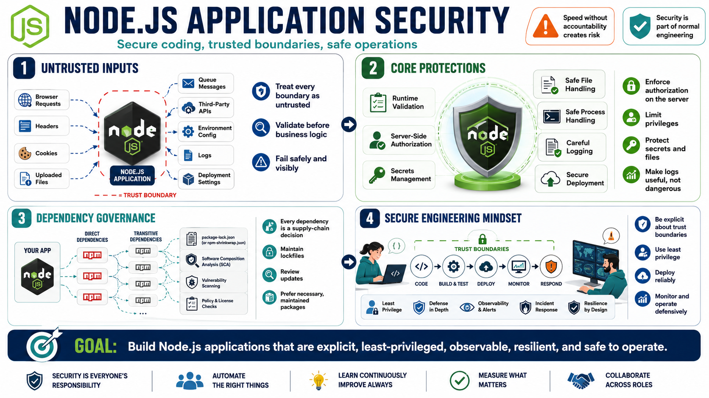

Course Summary and Key Takeaways
Connecting to LMS... Progress: in progress

Narration
Node.js application security combines secure coding, dependency governance, runtime validation, access control, secrets management, safe file and process handling, careful logging, and secure deployment practices. The platform is flexible and productive, but that flexibility means teams must be explicit about trust boundaries, runtime behavior, and operational controls.
Strong Node.js security treats every boundary as untrusted. Requests, headers, cookies, files, environment configuration, package scripts, third-party APIs, queue messages, logs, and deployment settings can all affect security. The application should validate data before business logic, enforce authorization on the server, limit privileges, and fail in ways that are safe and observable.
Every dependency is a supply chain decision. Teams should understand direct and transitive dependencies, maintain lockfiles, review updates, use software composition analysis, and prefer packages that are maintained and necessary. The point is not to fear npm. The point is to make dependency choices visible enough that speed does not erase accountability.
The goal is not to memorize every vulnerability. The goal is to build Node.js applications that are explicit, least-privileged, observable, resilient, and safe to operate. When developers and operators share that mindset, security becomes part of normal engineering: clear contracts, careful defaults, reliable deployment, useful monitoring, and defensive handling of the data and services the application touches.